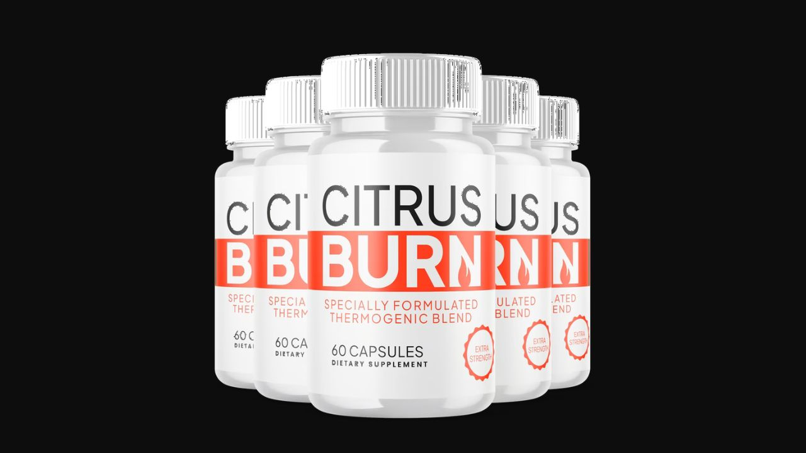

I tracked every significant complaint about CitrusBurn across verified purchase reviews and consumer platforms. Here's the honest, categorized breakdown — what's legitimate, what's exaggerated, and what you need to know before purchasing.
▶ Watch the full CitrusBurn analysis before making a decision

This is the most common complaint and the most predictable. Thermogenic resistance reversal is a biological process — not an overnight pharmaceutical effect. The official website clearly states most users notice changes after 6-12 weeks of consistent use. Users who stop after 2-3 weeks are stopping before the thermogenic mechanism has time to fully reactivate. The 7 ingredients need cumulative time to restore metabolic function — particularly for adults over 40 where thermogenic resistance has been building for years.
Legitimate — critical expectation issueCitrusBurn works best as a metabolic support tool — not a magic pill that overrides poor lifestyle habits. The thermogenic and appetite-controlling effects are real and documented, but they work synergistically with basic healthy behaviors. Users who take it while continuing extreme processed food consumption will see more modest results than users who pair it with reasonable eating habits. The formula reduces the effort required — it does not eliminate the need for any effort.
Exaggerated expectation — formula requires reasonable lifestyle cooperationCitrusBurn is sold exclusively through the official website. This is a deliberate quality control decision — not a red flag. Direct-only distribution ensures product authenticity and that the thermogenic formula hasn't been compromised by improper storage. Any CitrusBurn product found in retail stores or on Amazon is unauthorized and potentially counterfeit.
False concern — quality control standard, not suspiciousThe 2-bottle price of $79/bottle is premium. However, the 6-bottle package brings this to $49/bottle — competitive with inferior formulas in the thermogenic category. Given that the effective treatment window is 6-12 weeks minimum, the single-bottle is not a realistic trial anyway. The 6-bottle package is the economically and therapeutically sensible choice.
Legitimate — single bottle expensive, multi-bottle competitiveA minority of users report mild digestive adjustment in the first few days — most commonly associated with Apple Cider Vinegar and Ginger on an empty stomach. The official protocol recommends taking CitrusBurn in the morning with water. Adding it with a small amount of food eliminates this for virtually all users. It resolves naturally within the first week as the body adapts.
Legitimate — minor, temporary, easily resolvedCitrusBurn is not a scam. The evidence is unusually strong for this supplement category:
The official website cites 12 specific peer-reviewed studies from credible journals — including the International Journal of Medical Sciences, Journal of the International Society of Sports Nutrition, Bioscience Biotechnology and Biochemistry, and Metabolism. This is a level of academic transparency that counterfeit or fraudulent products would never provide, because cited studies can be independently verified.
The manufacturing is in an FDA-registered, GMP-certified US facility with third-party testing on every batch. The 180-day money-back guarantee is among the most generous in the industry and is consistently honored.
CitrusBurn is a genuine thermogenic supplement with 12 cited peer-reviewed references, FDA-registered US manufacturing, and a 180-day guarantee. Complaints are about result timing and pricing — not fraud, safety issues, or false ingredient claims. The science behind p-synephrine and thermogenic resistance is real and verifiable.
CitrusBurn is 100% plant-based, soy-free, dairy-free, non-GMO, stimulant-free, and jitter-free. No habit-forming compounds. No synthetic additives. Third-party tested for purity and potency.
Minor reports in first week: Mild digestive discomfort (take with food to prevent). Mild increased body warmth (a sign of thermogenesis activation — expected and positive).
Not reported: Heart palpitations, elevated blood pressure, serious allergic reactions, liver or kidney stress, or dependency. The 60-day double-blind safety study on p-synephrine confirmed its cardiovascular safety at recommended doses.
180-day guarantee · 12 peer-reviewed citations · Made in USA · GMP Certified
→ Try CitrusBurn Risk-Free for 180 DaysAffiliate Disclosure: This page contains affiliate links. We may earn a commission at no cost to you. See our Affiliate Disclosure. Content is for informational purposes only and does not constitute medical advice.